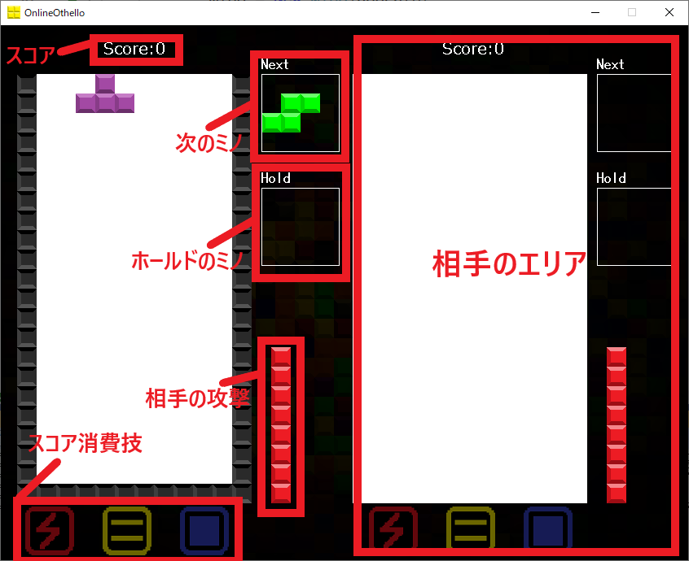

OnlineTetris
開発:K-Studio
提供:Github
メンバー:Broccoli
使用前に必要な手順
Online.txtのXXX.XXX.XXX.XXXを接続したいサーバーのIPアドレスを入力してください。(OT_Server.exeを使用しているサーバー)
Windows10の場合、Windowsに保護される場合がありますが、
OnlineTetris.exeの右クリックメニューのプロパティーから
「このファイルは他のコンピューターから取得したものです。
このコンピューターを保護するため。
このファイルへのアクセスはブロックされる可能性があります。」
の「□許可する(K)」にチェックをいれて、OKを押せば保護画面が出なくなり、アプリを使用することができます。
画面配置

操作方法
左矢印キー:ミノを左に移動
右矢印キー:ミノを右に移動
下矢印キー:ミノを一気に落とす
上矢印キー:ミノを回転
エンターキー:ホールド※1
1キー:スコアを10000消費して相手に攻撃する
2キー:スコアを7000消費して下の列を消す(4列)
3キー:スコアを2000消費して相手の攻撃を2列分防ぐ
※1ホールドとは現在のミノとホールドされたミノを交換するシステムです。